Peared
Peared
Overview
Peared is a nonprofit that seamlessly simplifies logistics by centralizing large scale organizations' efforts into small, local areas!
Volunteer Opportunities
Meet the dedicated individuals behind our organization:
Create an Event
Users can create events whether they are organizations or individuals! If enough people join and the party is verified, you are greenlit to continue your cause!
Join an Event
Users can join events created by others, doing small jobs for a great ambition! By joining the work of others, you can help make an impact while gaining real world experience! If you need volunteer hours, we are working on an autonomous system but are happy to sign it personally for now.
Join Our Team
If you want to do more than just join, you can submit an application to join our developers and staff. Whether you're computer programming or event programming, we take prospective members very seriously. Make sure you're confident and determined to help! More information is listed below.
Our Team
Meet the dedicated individuals behind our organization:
Officers
Anushka Polapally - Software and Financial Executive

Anushka is a junior at Tompkins and is interested in computer science and mathematics. Through Peared, she wants to help create effective service efforts through a volunteering social network!
Andrew Yoon - Software And Financial Executive

Andrew is a freshman from Tompkins High School with experience in software and mechanical engineering. He's trying to help making an impact efficient and approachable with new technologies like our web services!
Gaathri Chakka - Media Executive

Gaathri is a sophomore at Tompkins and is interested in business and creating innovative solutions. Through Peared, she hopes to create efficient impact and foster community interactions.
Sophia Ni - Event Production Executive

Sophia is a sophomore at Tompkins High School, and she's interested in business and finance. She's so excited to see the impact Peared will have on communities as it grows!
Web Developers
Nathan Yan - Software Lead
Zoe Xue
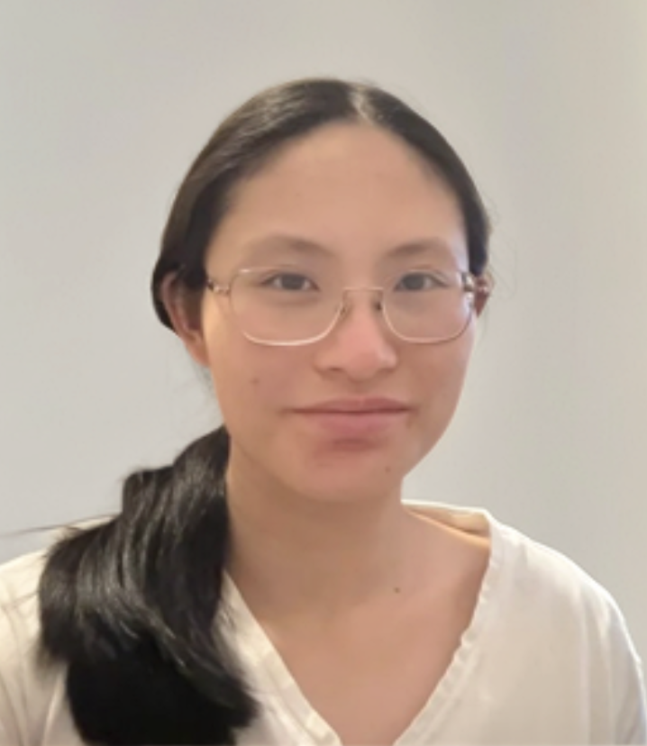Athri Karunamurthy
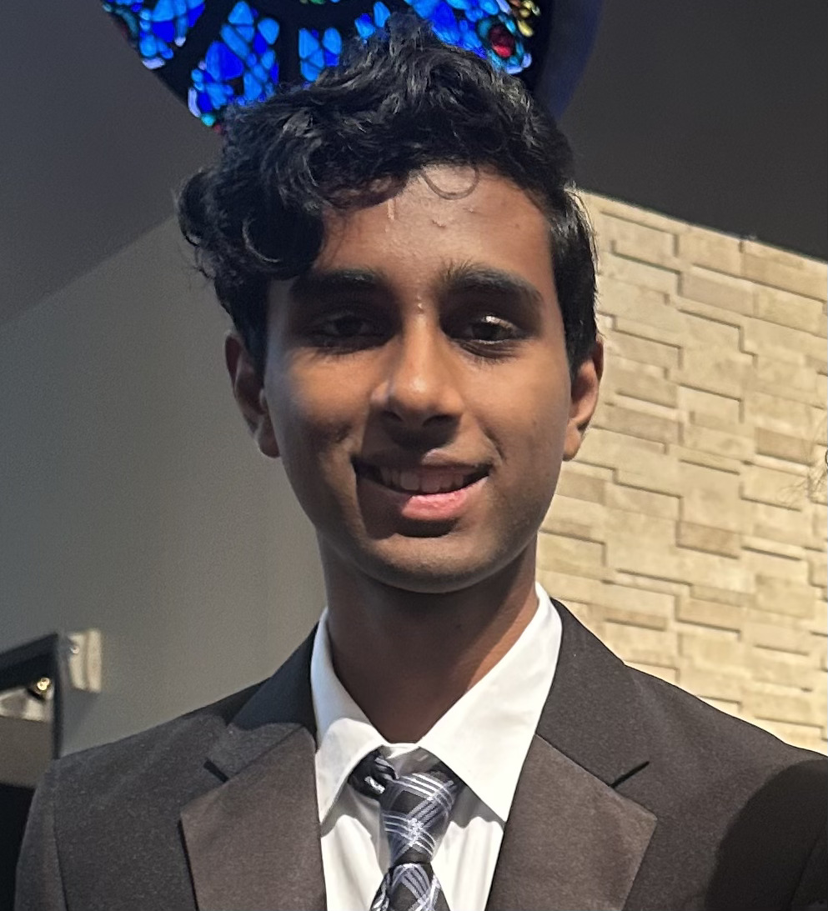Dharshana Uvaraj
Ayush Sachdeva
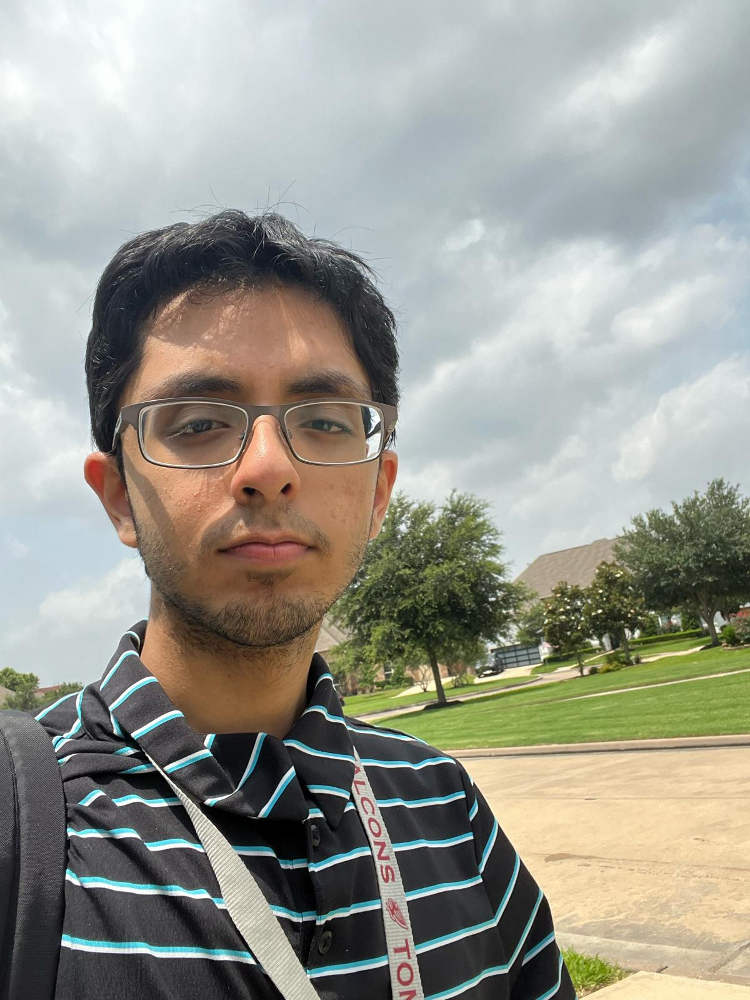Sumaiya Sheik

Thank these developers for an amazing product!
Finance
Monish Seelam
Sarah Kim
Neha Chiruvolu
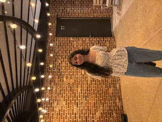Aarya Joshi
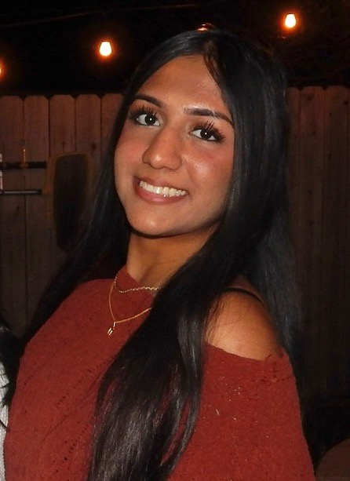Srinika Saravanan
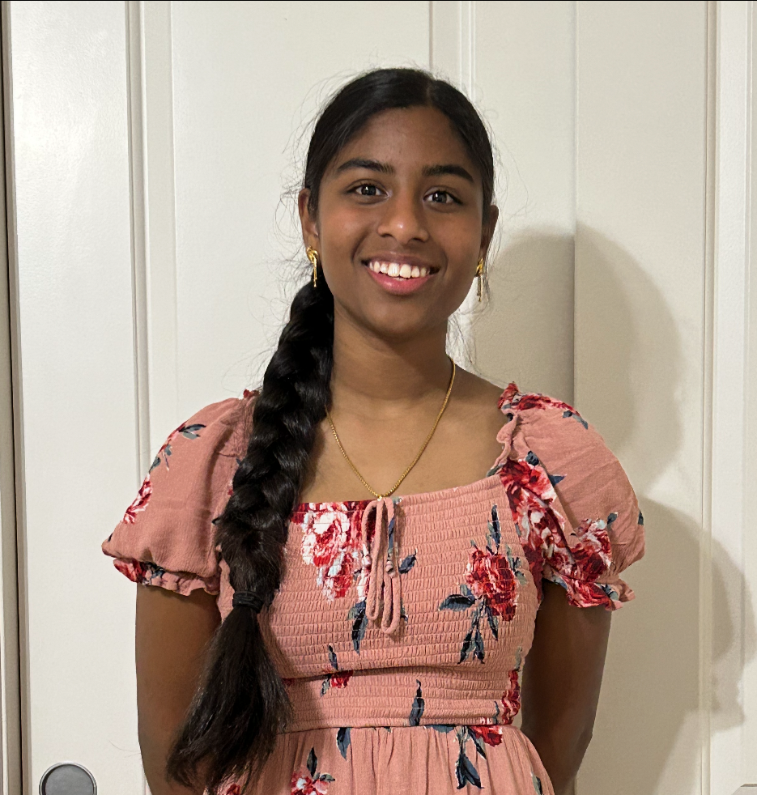Thank the financial managers for funding Peared!
Outreach
MaiLan Nguyen

Michael Choi
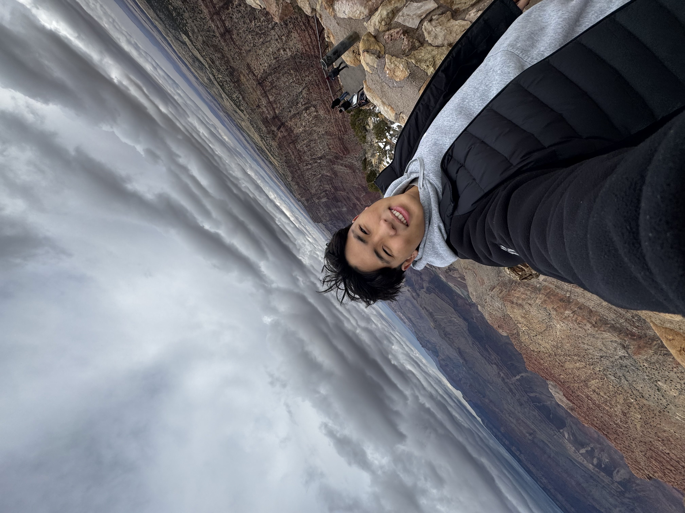Lily Cho
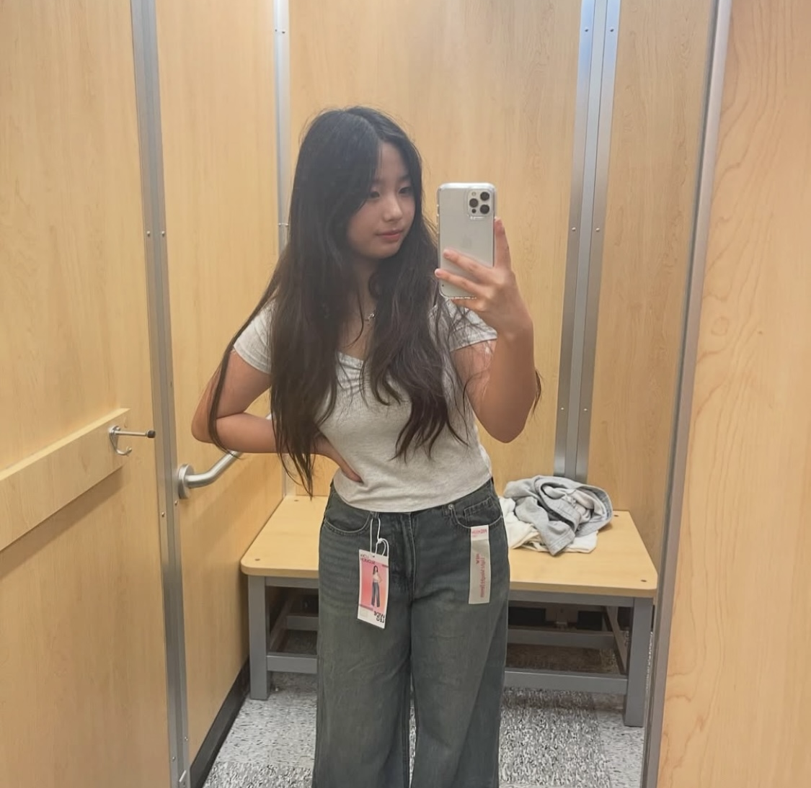Lynn Wu
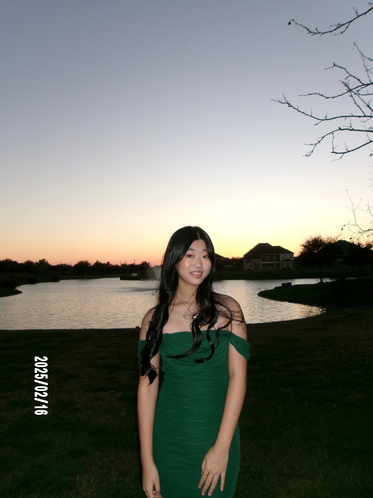Triana
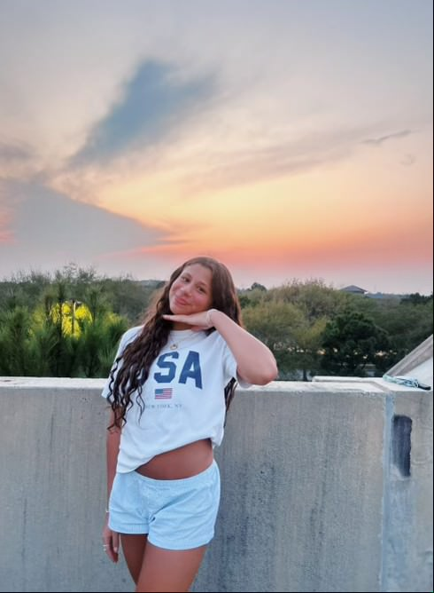Thank the outreach team you heard about us!
Events
Nishita Sakarepalle
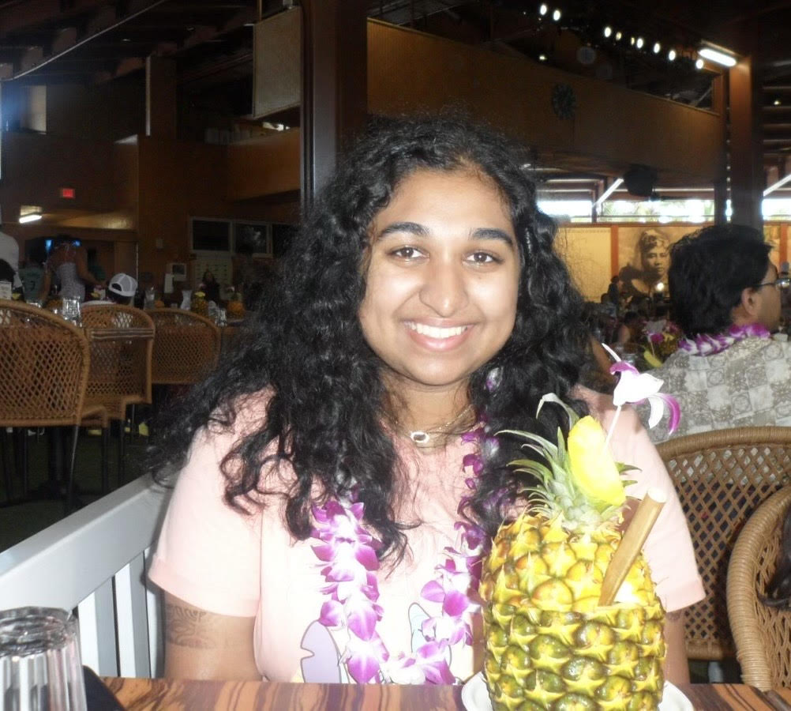Reshika Karnati
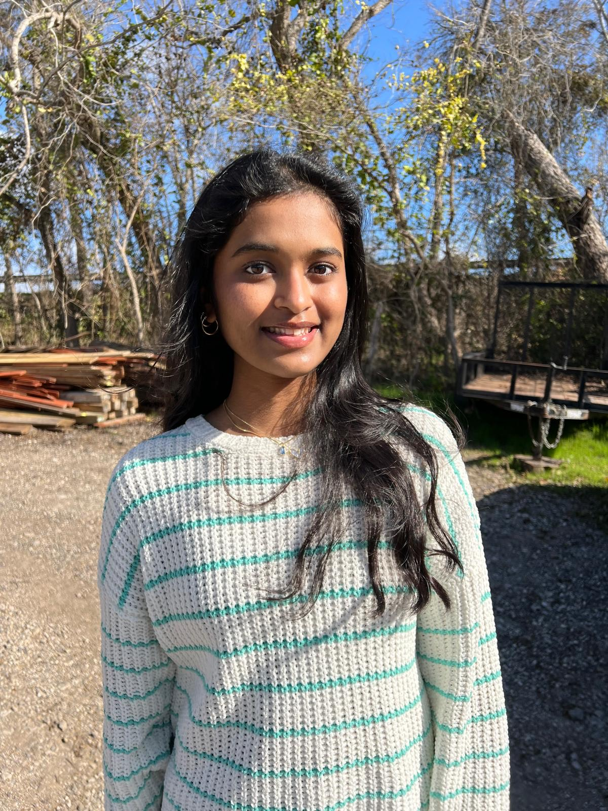Keren Jeon
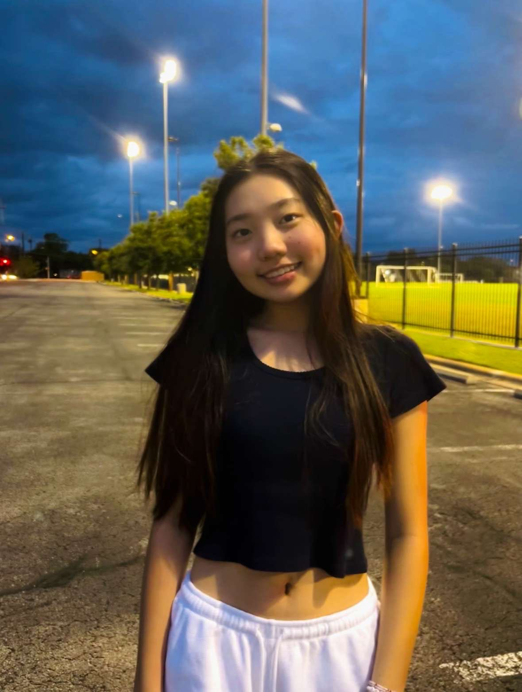Aagrah Singh
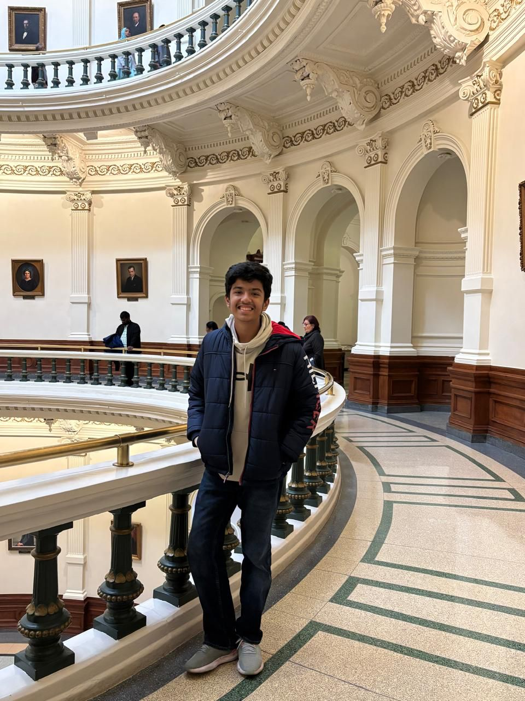Riddhi Jayaswal
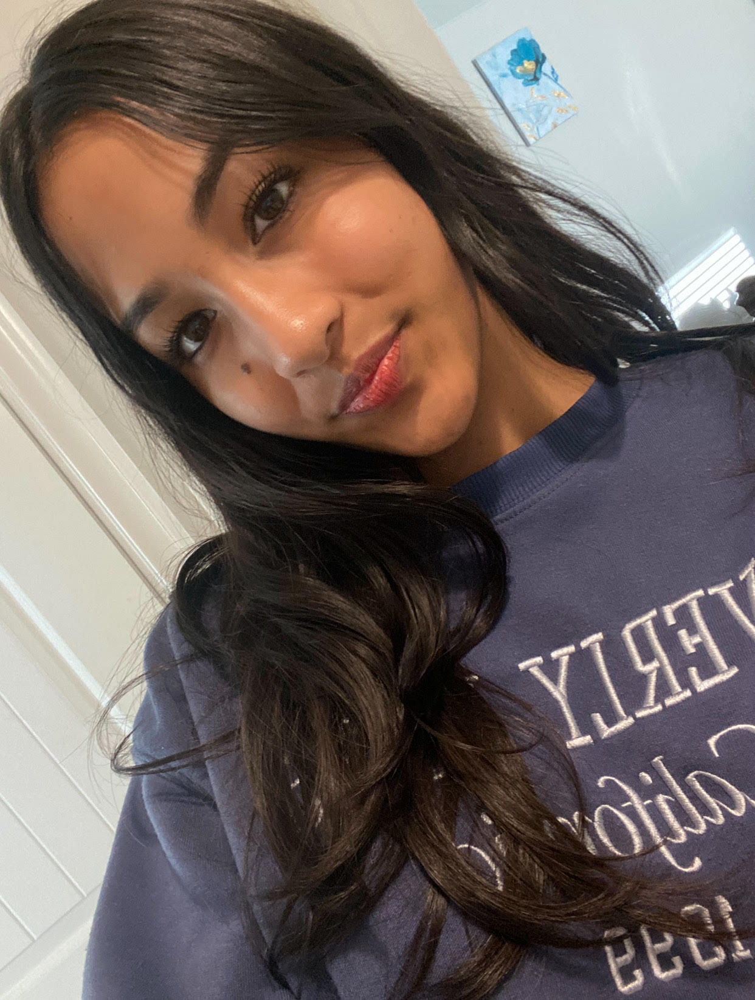Thank the events team for our upcoming events!
Our History
Join us as we walk you through the history of our organization:
Peared has its first Community Demo Night!
June 20th, 2025
Many thanks to all these generous and brave organizations!
Peared releases its Minimum Viable Product!
June 4th, 2025
We now have online connection capabilities, including making and signup up for events!
Peared accepts new members to help its cause!
April 21st, 2025
Peared inducts its first members for software, financial, outreach, and events to join their its!
Peared releases its first UIUX and database components!
April 12th, 2025
The website that you're reading once housed the Peared UIUX with no other features.
Peared submits to the Diamond Challenge!
December 2024
In order to garner support from a wider audience, Peared submitted its concept to judges and made it to the second round.
Peared is Conceived!
November 2024
We discovered that many elderly patients passing through the hospital where Anushka's mom practices were incapable of finding help or entertainment, even if they were in good health.
Contact Us
If you have any questions or would like to get in touch, please contact us at:
Email: pearedco@gmail.com
Phone: (832) 593-3075
Messages & Whatsapp: pearedco@gmail.com
Instagram: @pearedco